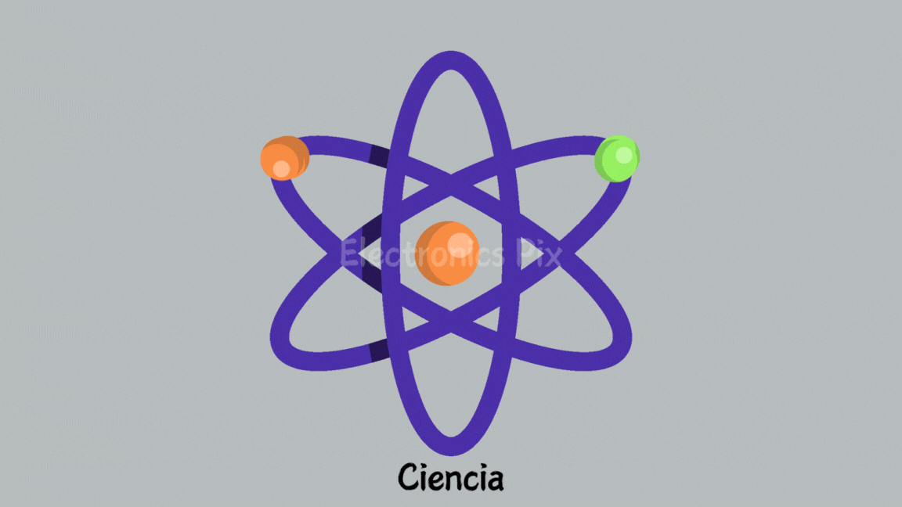

¿por que es importante aprender tecnologia?
La tecnología es una herramienta que ha transformado la forma en que vivimos y trabajamos. En la actualidad, muchas personas se benefician de los avances de la tecnología para optimizar las tareas cotidianas. Un ejemplo de ello, es la importancia de la tecnología en la educación que mejora considerablemente los procesos de aprendizaje. El conocimiento científico tiene una repercusión gigante en la forma en la que utilizamos recursos tecnológicos. Ese conocimiento es lo que ha contribuido al desarrollo de las tecnologías actuales. Estos avances tecnológicos son una parte fundamental de nuestra vida diaria. La importancia de la tecnología está estrechamente relacionada con los avances que requiere la sociedad para formar a profesionales capacitados. De esta manera, la tecnología educativa es una parte fundamental en el proceso de aprendizaje de las nuevas generaciones
¿En que ayudado la tecnologia al ser humano?
La tecnología ha impulsado el bienestar del ser humano y ha proporcionado a la humanidad la capacidad de vivir en sociedad de una manera relativamente cómoda. La tecnología es una extensión de la innovación del ser humano que le ayuda a desenvolverse de mejor forma en su entorno y el uso de las TICS puede ayudar a solucionar problemáticas y necesidades a los que se enfrenta la sociedad actual, sobretodo a grupos vulnerables con bajos recursos y escasas oportunidades. La tecnología digital puede ser tan beneficiosa para el desarrollo como perniciosa para los derechos humanos y al revés. Un grupo de expertos de la ONU ha señalado que la tecnología digital puede ser una herramienta poderosa para el desarrollo sostenible. La tecnología ha fomentado al ser humano a cambiar su modo de vivir. Ha ayudado en muchos cambios como por ejemplo en el área de la medicina, los electrodomésticos, la ciencia, y en otros aspectos.
10 ventajas de la tecnologia
Algunas ventajas de la tecnología son:
1.Acceso rápido a la información
2.Facilita la comunicación
3.Mejora el entretenimiento
4.Estimula la creatividad
5.Facilita procesos educativos
6.Simplifica las tareas domésticas
7.Mejoras en transporte
8.Nuevos empleos
9.Permite una interconexión de las personas nunca antes vista
10.Mejora la velocidad y la calidad del trabajo
¿Que relacion tiene la tecnologia con la ciencia?
La ciencia y la tecnología están estrechamente relacionadas. La ciencia es lo que genera conocimiento científico y la tecnología hace uso de ese conocimiento para crear productos tecnológicos artificiales o desarrollar ideas con el fin de resolver un problema técnico o satisfacer necesidades del ser humano.
La tecnociencia es un área de los estudios de ciencia, tecnología y sociedad que se centra en la relación existente entre la tecnología y la ciencia. Esta disciplina establece que existe una conexión inseparable entre las dos áreas mencionadas, las cuales son interdependientes.
¿Que es la electrónica?
La electrónica es una rama de la física aplicada que se ocupa del estudio y la aplicación de los electrones y otras partículas cargadas eléctricamente en el vacío y la materia. La electrónica utiliza dispositivos semiconductores como transistores, diodos, circuitos integrados y otros componentes para controlar, amplificar, procesar o generar señales eléctricas. La electrónica tiene muchas aplicaciones en campos como la informática, las telecomunicaciones, la robótica, la medicina, la industria y el entretenimiento.
La electrónica se puede dividir en varias ramas o especialidades, según el tipo de señal, el nivel de potencia, la frecuencia o el propósito de los circuitos.